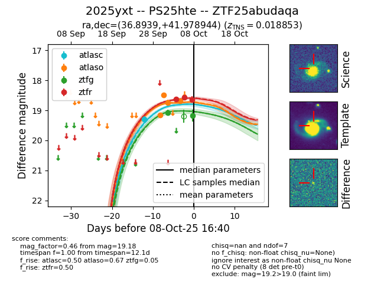
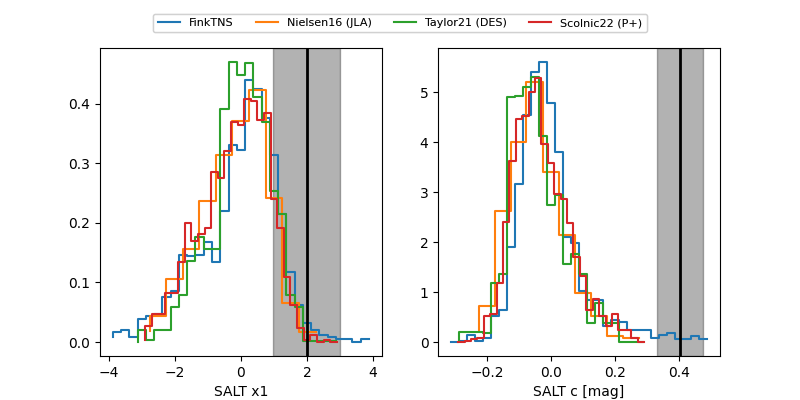

FINK: ZTF25abudaqa
Lasair: ZTF25abudaqa
ALeRCE: ZTF25abudaqa
TNS: 2025yxt
YSE: 2025yxt
ZTF25abudaqa (ztf,fink)
2025yxt (tns,yse)
PS25hte (panstarrs)
equatorial (ra, dec) = (36.8939,+41.97894)
galactic (l, b) = (141.4325,-17.41314)


last atlasc=19.28, atlaso=18.68, ztfg=19.18, ztfr=18.64
1 atlasc, 4 atlaso, 2 ztfg, 3 ztfr detections